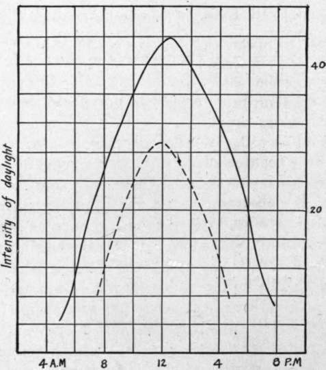
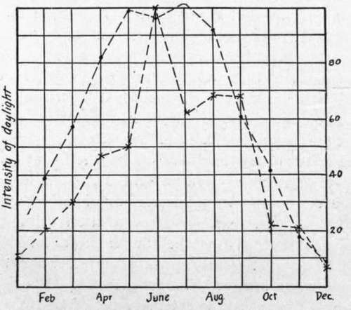

IV. Sensitized Materials And Chemicals. Chapter XVII. The Distribution Of Light, Shade And Color In The Aerial View
Description
This section is from the book "Airplane Photography", by Herbert E. Ives. Also available from Amazon: Airplane photography.
IV. Sensitized Materials And Chemicals. Chapter XVII. The Distribution Of Light, Shade And Color In The Aerial View
The general appearance of the earth as viewed from above has already been described and illustrated (Figs. 10 and 11). It remains to deal with the earth's appearance in a more analytic and quantitative manner, in order to decide upon the characteristics to be sought in our photographic sensitive materials.
Range Of Brightness
The absence of great contrasts so apparent in the view of the earth from a plane is confirmed by photometric observations. These show that the average landscape, as seen from the air, rarely presents a range of brightness of more than seven to one, even when seen without the presence of veiling haze. It is to be remembered that shadows constitute no important part of the aerial landscape. Vertical walls in shadow, which form a substantial part of the surfaces seen by an observer on the ground, are invisible or greatly foreshortened from the air. Moreover, they are never contrasted against the sky, which is photographically often the brightest part of the ordinary picture. To the aviator's eye shadows on the ground are only of any length at early and late daylight hours. Even at these times they cover but a small area, since the number of high vertically projecting objects in a representative landscape is small. Lacking shadows, the brightness range is only that between various kinds of earth, water, and vegetation. Chalk (from freshly dug trenches), reflected sunlight from water, or marble buildings, furnish almost the only extensions to the brightness scale as above given.
Diurnal And Seasonal Changes
During the winter months on the Western Front photography from the air was only possible for two or three hours around noon, on clear days. This calls attention to another factor of prime importance, namely, the large variation in the intensity of daylight during the course of the day and during the course of the year.
Measurements showing typical variations from morning to night are exhibited in Fig. 101, from which it appears that there is an increase in illumination of four to five times from 8 o'clock—when it would be considered full daylight for purely visual observation—until noon, while there is a corresponding decrease by four o'clock. Fig. 102 shows sets of measurements by two different authorities which give the average intensity of daylight for each month throughout the year. From December to July there is an increase of approximately ten times. From both sets of data it therefore appears that—neglecting the frequent occurrence of clouds which reduce the illumination to a half or a quarter or even less—a variation in illumination of forty or fifty times occurs between mid-day in summer and morning in winter. In the photography of stationary objects on the ground this range of intensities is easily taken care of by selection of lens stop and shutter speed. On the airplane it is quite otherwise, because the shutter speeds called for at the lower illuminations are much slower than the motion of the plane will allow.
Fig. 101. - Variation of average daylight intensity during the day.
Fig. 102. - Variation of intensity of daylight through the year; two different sets of measurements.
Haze
At low altitudes the brightness range is substantially that which would be obtained by photometric measurements of soil and vegetation made at the earth's surface. At higher altitudes, especially above 2000 meters, this brightness range is materially decreased by atmospheric haze. The significance of this lies in the fact that for safety from anti-aircraft guns, war-time aerial photography must be carried out at very great elevations. Toward the end of the Great War photographic missions traveling at from 5000 to 7000 meters were the rule. At these heights, even in very clear weather, a veil of bluish-white haze reduces the already small contrasts still more. Some means for overcoming the effect of this haze becomes imperative, therefore, in order to secure in the picture even the normal contrast of the object.
Haze is to be sharply distinguished from clouds or fog. Clouds and fog consist of globules of water vapor of large size, opaque to light. Haze, on the contrary, is more opaque to some colors than to others, or is selective in its veiling effect. Its scattering action on light is greatest in the violet and blue of the spectrum, decreasing rapidly through the green, yellow, and red, the exact relation being that the scattering is inversely as the fourth power of the wavelength. It is, consequently, possible to pierce or cut haze by using yellow, orange, or red color screens. It is this possibility which has led to the extensive use of yellow or orange goggles for shooting and for naval lookout work. In aerial photography the equivalent is to be found in color filters, used with color sensitive (orthochromatic or panchromatic) plates, which have been found essential for all high altitude work.
Color
Visual observation from the airplane is aided in no inconsiderable degree by the differences of color that exist between various objects of nearly the same brightness. This means of distinguishing differences of character fails in the photographic plate, which is color-blind; that is, it reproduces all objects as grays of varying brightness. It is color-blind in another sense as well, in that it evaluates colors as to brightness differently from the way the eye does, overrating blues and violets and underrating yellows and reds. This first kind of color-blindness is a positive disadvantage, for it leaves available for differentiating objects only their brightness differences. The second kind of color-blindness may on occasion actually be an advantage. For it may happen by accident, or by design (through the skilful use of color filters), that objects appearing nearly the same to the eye appear different in the plate. More will be said about this in connection with the use of filters for the detection of camouflage.
The range of hues seen in the aerial landscape is not large. Greens (grass and foliage) predominate, followed by browns (earth), neither color being bright or saturated. Over towns or cities we find that grays (roads) and redder browns (brick) are conspicuous. Blues are practically never seen, although it is to be noted that a fair share of the illumination of the ground is by blue sky light and that the haze itself is bluish. Consequently, the general tone of a landscape is much bluer than one would be apt to imagine it from consideration of the general green and brown character of the constituent objects. A color photograph from the air would greatly resemble a pastel in its low range of tones and the absence of bright colors.
Continue to:
- prev: Installation Of Auxiliaries
- Table of Contents
- next: The Photographic Requirements Dictated By Brightness And Color Considerations
Tags
camera, lens, airplane, aerial, film, exposure, photography, maps, birdseye